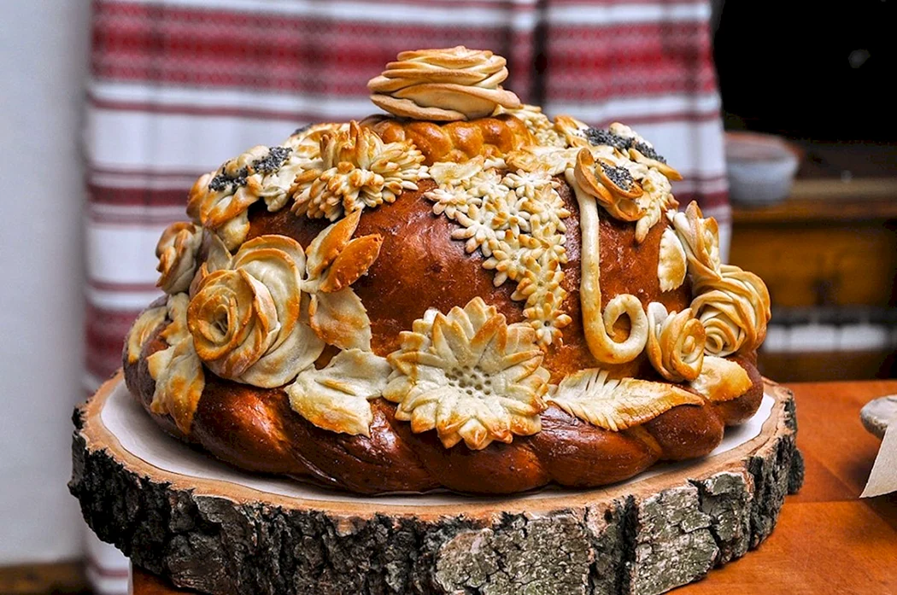
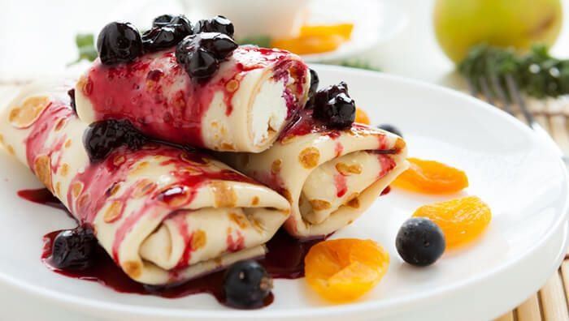
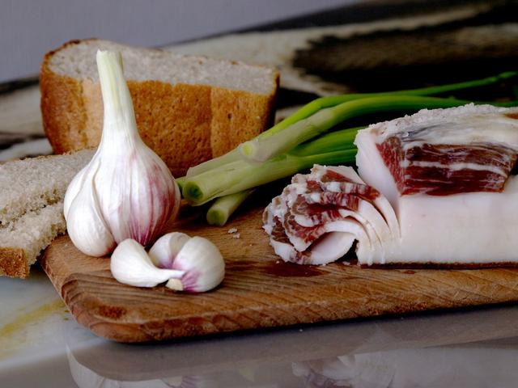
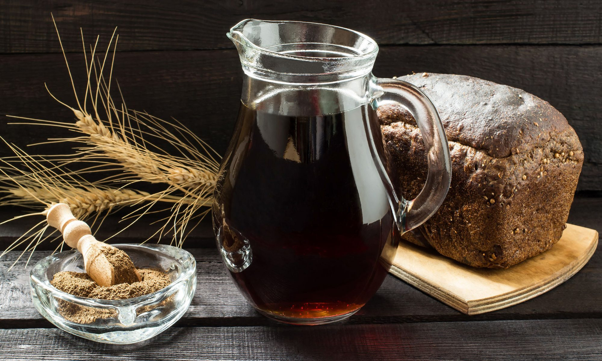

Ukrainian Cuisine
Culinary Characteristics
Ukrainian cuisine is one of the most varied European cuisines. It is heavily influenced by the rich dark soil (chornozem) from which its ingredients come, and often involves many components. The most distinctive feature of Ukrainian cuisine is its complex heating process – traditional dishes often undergo cooking where they are first fried or boiled, and then stewed or baked.
The majority of Ukrainian dishes descend from ancient peasant dishes based on plentiful grain resources such as rye, as well as staple vegetables such as potatoes, cabbage, mushrooms, and beetroots. Ukrainian dishes incorporate both traditional Slavic techniques as well as other European techniques, a result of years of foreign influence.
Famous and Popular Dishes

Bread and Grain
- Bublyk: Ring-shaped bread roll made from boiled dough.
- Korovai: Round braided bread baked for weddings.
- Palianytsia: Traditional Ukrainian bread.
- Savory Pampushky: Soft bread portions with garlic butter.
- Paska: Easter rich pastry.

Main Courses
- Banosh: Cornmeal with sour cream and cheese.
- Deruny: Potato pancakes similar to the American hash browns.
- Holubtsi: Cabbage rolls with rice/meat filling.
- Mlyntsi: Thin pancakes, called nalysnyky when stuffed.
- Varenyky: Dumplings with many fillings.

Appetizers and Desserts
- Kholodets: aspic made with meat or fish.
- Salo: cured fatback, served with pieces of bread and onion.
- Kutia: traditional Christmas sweet porridge.
- Syrnyky: fried quark fritters, sometimes with raisins.
- Varennia: fruit preserve made by cooking berries in sugar syrup.
- Verhuny: crispy deep-fried pastry, similar to angel wings.

Beverages
- Horilka: strong spirit (basically, just vodka).
- Nalyvka: homemade wine made from various berries or fruits.
- Kompot: sweet beverage made of berries boiled in water.
- Kysil: kompot that is thickened with potato starch.
- Kvas: sparkling beverage usually brewed from dried rye bread.
Soups and Borscht
The Ukrainian cuisine has many soups made on the basis of dried peas, buckwheat, cabbage, chicken, pork, salo, fish, mushrooms, etc. However, the most famous and interesting of all of them is borscht, the national dish of Ukraine, of which many varieties exist.
Red borscht, usually simply called borscht, is a vegetable soup made from beets, cabbage, potatoes, tomatoes, carrots, onions, garlic, and dill. There are about 30 varieties of Ukrainian borscht. It may include meat or fish. Here you can view the recipe for one of the red borscht varieties and, perhaps, even cook it yourself. View Borscht Recipe